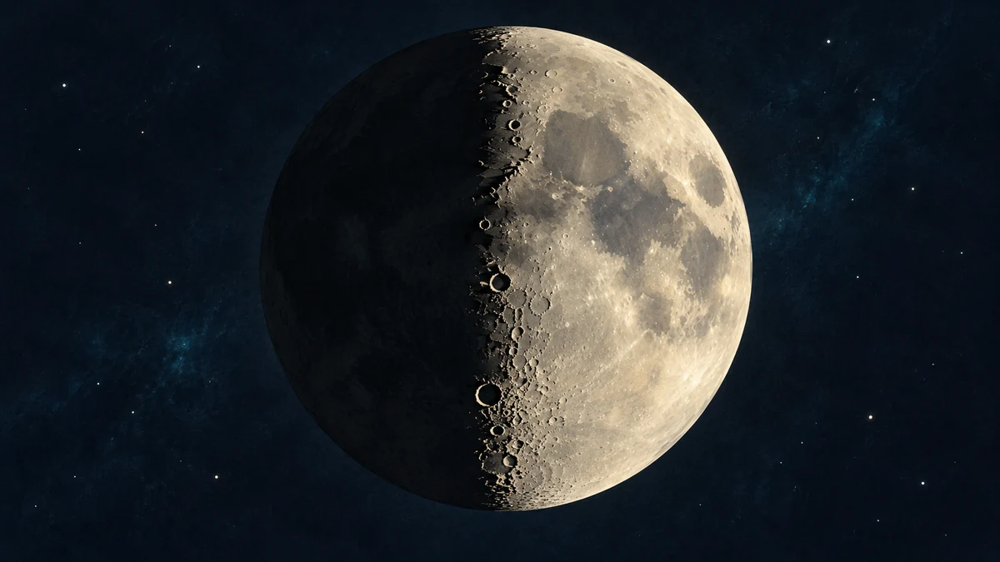

달의 크레이터는 왜 밝고 어두운 경계에서 잘 보일까요?
달 표면의 울퉁불퉁함을 드러내는 열쇠는 빛의 양만이 아닙니다. 낮과 밤의 경계에 생기는 긴 그림자를 읽으며 달을 관찰하는 방법을 알아봅니다.

환한 달이 늘 자세히 보이는 것은 아니에요
달의 크레이터를 보고 싶다면 가장 환한 보름달을 기다리면 될까요? 달 전체의 무늬를 살피는 일과 표면의 높낮이를 구별하는 일은 조금 다릅니다. NASA는 크레이터와 산을 관찰할 때 보름달 이외의 위상도 골라보라고 권합니다. 표면에 생긴 그림자가 지형을 구분하는 데 도움이 되기 때문이에요.
이번에는 달이 왜 차고 기우는지를 다시 설명하기보다, 이미 보이는 달의 어느 부분을 자세히 살필지 생각해볼 거예요. 작은 망원경이나 쌍안경을 사용할 때 시선을 둘 곳을 정하는 이야기입니다.[1]
달의 낮과 밤이 만나는 곳
달의 밝은 부분과 어두운 부분 사이를 명암 경계선, 또는 터미네이터라고 부릅니다. 달 표면에서 낮과 밤이 나뉘는 경계이지요. 그 가까이에서는 햇빛이 낮은 각도로 비쳐, 산과 크레이터 가장자리가 긴 그림자를 만듭니다. 지구에서 해가 낮을 때 길어진 그림자를 떠올리면 이해하기 쉬워요.
밝은 테두리 옆에 짙은 그늘이 놓이면 평평한 무늬처럼 보이던 곳에서 높낮이의 단서가 드러납니다. 다만 어둡게 보이는 면적이 곧 크레이터의 크기나 깊이는 아닙니다. 조명 방향도 함께 작용하므로 그림자 하나만 보고 실제 지형의 치수를 단정하지 마세요.[1] [2]
반달 부근에서 경계를 따라가 보세요
상현과 하현에는 지구에서 보이는 달 원반의 절반가량이 햇빛을 받습니다. 이때 명암 경계가 원반 가운데를 지나며, 주변 산과 크레이터의 긴 그림자가 두드러집니다. NASA의 반달 설명도 이 시기를 달 지형 관찰에 좋은 때로 소개합니다. 오늘이 바로 그 시기라는 뜻은 아니니 날짜를 먼저 확인해야 해요.
처음부터 지형 이름을 모두 외울 필요는 없습니다. 경계 가까이에서 밝게 드러난 작은 가장자리 하나를 고른 뒤, 그 옆의 그늘 모양을 천천히 보세요. 다른 날 같은 주변을 살피며 빛과 그림자가 어떻게 달라지는지 비교하는 것도 좋은 출발입니다.[2] [1]
크게 보기 전에 흔들림을 줄여요
NASA는 쌍안경으로도 달의 큰 크레이터와 산줄기에서 질감을 볼 수 있다고 안내합니다. 배율을 높이면 세부를 더 볼 수 있지만 흔들림을 줄일 받침이 필요할 수 있어요. 맨눈으로 원반 전체를 찾고, 쌍안경에서는 경계를 따라 몇 곳만 살피는 식으로 범위를 좁혀보세요.
ORBIT의 밤하늘 달력에서 오늘의 달 모양을 확인하고, 실제로 달이 떠 있는 시간과 날씨도 살펴 관찰을 준비하세요. 이 글은 제가 직접 본 후기가 아니라 NASA 자료를 바탕으로 한 AI 해설입니다. 달의 울퉁불퉁함을 읽을 때는 밝기뿐 아니라 그림자를 만드는 햇빛의 각도가 중요하다는 한 가지를 기억해두세요.[1]
이 이야기를 확인한 자료
- NASA Science · Moon Viewing Tips ↗자료 확인 2026.10.04 · 원문 새 탭
- NASA APOD · Quarter Moons (2023-10-21) ↗자료 확인 2026.10.04 · 원문 새 탭
자료의 날짜와 적용 범위를 함께 확인해주세요. 오류 제보하기 →